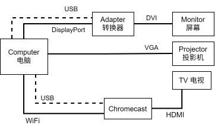
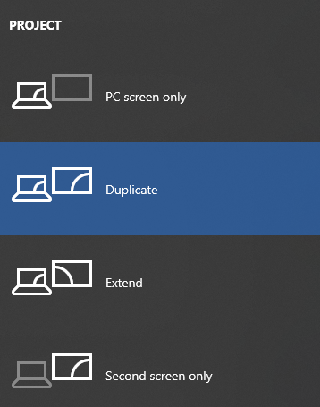

There are 3 screens connected to the computer: 我们的电脑有三个显示屏：
They are connected like this: 显示屏是这样链接的：

( dotted line indicates a power cable, it doesn’t transmit data 虚线表示电源线，不传数据的 )
Due to lack of ports on the computer, the TV is connected over WiFi using a device called a Chromecast. 因为我们的电脑不够端口，电视是通过WiFi (无线网络) 和一个叫Chromecast的设备来链接的。

There are two ways to set up the screens in Windows. Press ⊞Win + P to choose between extend and duplicate. In extend, it treats the monitor and the projector as two separate displays that can display different things. This is useful on Sundays as the congregation doesn’t need to see your controls. In duplicate, the monitor and projector will always display the same thing. This is useful if you are just showing a video or document. Windows有两个方法来设置多个显示器。按⊞Win + P可选extend（延长）或 duplicate（复制）。 用挺长就可以在显示器和投影机显示不同的东西。平常星期天我们会用这个应为会众不需要看我们的操作界面。 用复制就显示器和投影机的画面会一样。如果你只要放个视频或文件，选择这个。